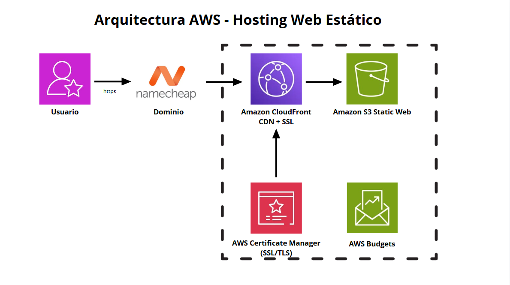

← Volver a proyectos
Hosting Web Estático en AWS
Implementación de una arquitectura serverless para alojar un sitio web utilizando servicios administrados de AWS.
AWS
S3
CloudFront
ACM
Budgets

Descripción
El proyecto implementa una arquitectura serverless para publicar contenido estático utilizando Amazon S3 como origen y CloudFront como CDN para distribución segura mediante HTTPS.
Servicios utilizados
Amazon S3
Amazon CloudFront
AWS Certificate Manager
AWS Budgets
Namecheap DNS
Aprendizajes
Configuración de buckets S3 para hosting web
Distribución global mediante CloudFront
Implementación de certificados SSL/TLS
Configuración DNS personalizada
Control y monitoreo de costos
Ver repositorio en GitHub